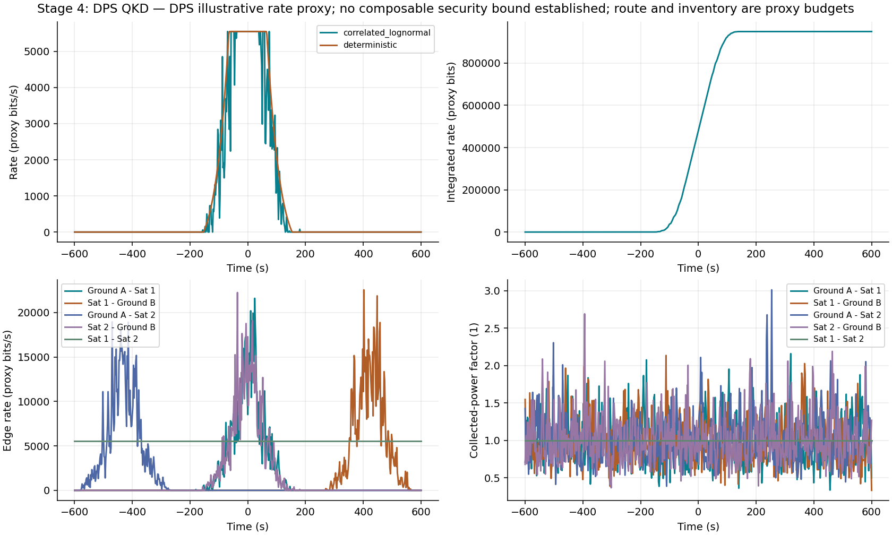
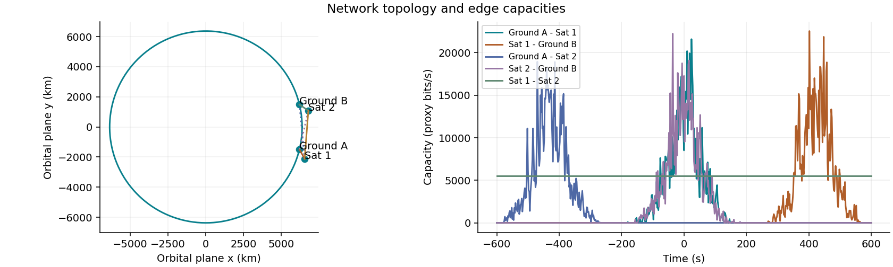
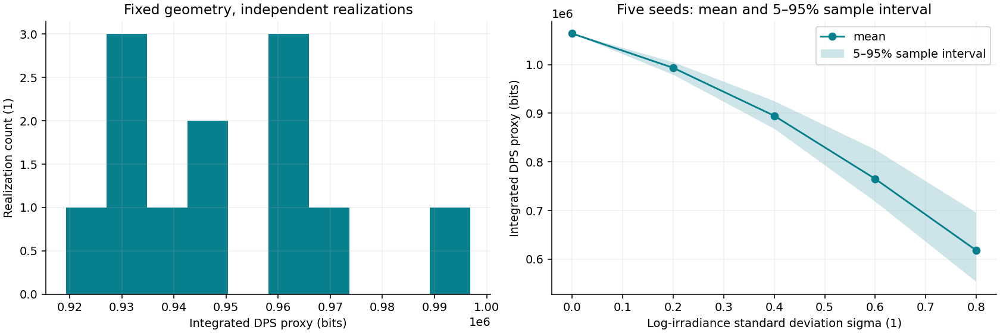

DPS illustrative rate proxy; no composable security bound established; route and inventory are proxy budgets
Simulated data. Independent per-edge resources. No certified secret key. Parameters and units: results.json. Ensemble: ensemble.csv.
| mean_rate_bps | 789.8109031200162 |
| median_rate_bps | 0.0 |
| p05_rate_bps | 0.0 |
| outage_fraction | 0.7670549084858569 |
| time_outage_fraction | 0.7666666666666667 |
| integrated_rate_bits | 949352.7055502587 |



